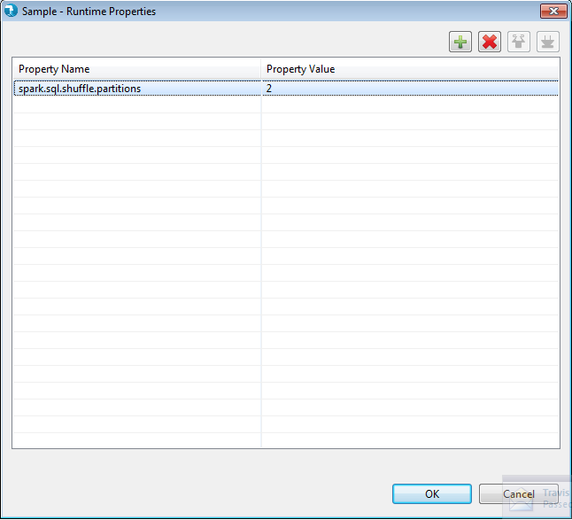

How to Pass Hadoop Properties to Component
Each component has a Runtime Properties grid where users can specify Hadoop properties for each component. Users need to provide the Property name along with value in the grid.

Refer to the below table with different Hadoop Runtime properties along with description for each.
| name | value | description |
| mapreduce.jobtracker.jobhistory.location | If job tracker is static the history files are stored in this single well known place. If No value is set here, by default, it is in the local file system at ${hadoop.log.dir}/history. | |
| mapreduce.jobtracker.jobhistory.task.numberprogresssplits | 12 | Every task attempt progresses from 0.0 to 1.0 [unless it fails or is killed]. We record, for each task attempt, certain statistics over each twelfth of the progress range. You can change the number of intervals we divide the entire range of progress into by setting this property. Higher values give more precision to the recorded data, but costs more memory in the job tracker at runtime. Each increment in this attribute costs 16 bytes per running task. |
| mapreduce.job.userhistorylocation | User can specify a location to store the history files of a particular job. If nothing is specified, the logs are stored in output directory. The files are stored in "_logs/history/" in the directory. User can stop logging by giving the value "none". | |
| mapreduce.jobtracker.jobhistory.completed.location | The completed job history files are stored at this single well known location. If nothing is specified, the files are stored at ${mapreduce.jobtracker.jobhistory.location}/done. | |
| mapreduce.job.committer.setup.cleanup.needed | true | true, if job needs job-setup and job-cleanup. false, otherwise |
| mapreduce.task.io.sort.factor | 10 | The number of streams to merge at once while sorting files. This determines the number of open file handles. |
| mapreduce.task.io.sort.mb | 100 | The total amount of buffer memory to use while sorting files, in megabytes. By default, gives each merge stream 1MB, which should minimize seeks. |
| mapreduce.map.sort.spill.percent | 0.80 | The soft limit in the serialization buffer. Once reached, a thread will begin to spill the contents to disk in the background. Note that collection will not block if this threshold is exceeded while a spill is already in progress, so spills may be larger than this threshold when it is set to less than .5 |
| mapreduce.jobtracker.address | local | The host and port that the MapReduce job tracker runs at. If "local", then jobs are run in-process as a single map and reduce task. |
| mapreduce.local.clientfactory.class.name | org.apache.hadoop.mapred.LocalClientFactory | This the client factory that is responsible for creating local job runner client |
| mapreduce.jobtracker.http.address | 0.0.0.0:50030 | The job tracker http server address and port the server will listen on. If the port is 0 then the server will start on a free port. |
| mapreduce.jobtracker.handler.count | 10 | The number of server threads for the JobTracker. This should be roughly 4% of the number of tasktracker nodes. |
| mapreduce.tasktracker.report.address | 127.0.0.1:0 | The interface and port that task tracker server listens on. Since it is only connected to by the tasks, it uses the local interface. EXPERT ONLY. Should only be changed if your host does not have the loopback interface. |
| mapreduce.cluster.local.dir | ${hadoop.tmp.dir}/mapred/local | The local directory where MapReduce stores intermediate data files. May be a comma-separated list of directories on different devices in order to spread disk i/o. Directories that do not exist are ignored. |
| mapreduce.jobtracker.system.dir | ${hadoop.tmp.dir}/mapred/system | The directory where MapReduce stores control files. |
| mapreduce.jobtracker.staging.root.dir | ${hadoop.tmp.dir}/mapred/staging | The root of the staging area for users' job files In practice, this should be the directory where users' home directories are located (usually /user) |
| mapreduce.cluster.temp.dir | ${hadoop.tmp.dir}/mapred/temp | A shared directory for temporary files. |
| mapreduce.tasktracker.local.dir.minspacestart | 0 | If the space in mapreduce.cluster.local.dir drops under this, do not ask for more tasks. Value in bytes. |
| mapreduce.tasktracker.local.dir.minspacekill | 0 | If the space in mapreduce.cluster.local.dir drops under this, do not ask more tasks until all the current ones have finished and cleaned up. Also, to save the rest of the tasks we have running, kill one of them, to clean up some space. Start with the reduce tasks, then go with the ones that have finished the least. Value in bytes. |
| mapreduce.jobtracker.expire.trackers.interval | 600000 | Expert: The time-interval, in miliseconds, after which a tasktracker is declared 'lost' if it doesn't send heartbeats. |
| mapreduce.tasktracker.instrumentation | org.apache.hadoop.mapred.TaskTrackerMetricsInst | Expert: The instrumentation class to associate with each TaskTracker. |
| mapreduce.tasktracker.resourcecalculatorplugin | Name of the class whose instance will be used to query resource information on the tasktracker. The class must be an instance of org.apache.hadoop.util.ResourceCalculatorPlugin. If the value is null, the tasktracker attempts to use a class appropriate to the platform. Currently, the only platform supported is Linux. | |
| mapreduce.tasktracker.taskmemorymanager.monitoringinterval | 5000 | The interval, in milliseconds, for which the tasktracker waits between two cycles of monitoring its tasks' memory usage. Used only if tasks' memory management is enabled via mapred.tasktracker.tasks.maxmemory. |
| mapreduce.tasktracker.tasks.sleeptimebeforesigkill | 5000 | The time, in milliseconds, the tasktracker waits for sending a SIGKILL to a task, after it has been sent a SIGTERM. This is currently not used on WINDOWS where tasks are just sent a SIGTERM. |
| mapreduce.job.maps | 2 | The default number of map tasks per job. Ignored when mapreduce.jobtracker.address is "local". |
| mapreduce.job.reduces | 1 | The default number of reduce tasks per job. Typically set to 99% of the cluster's reduce capacity, so that if a node fails the reduces can still be executed in a single wave. Ignored when mapreduce.jobtracker.address is "local". |
| mapreduce.jobtracker.restart.recover | false | "true" to enable (job) recovery upon restart, "false" to start afresh |
| mapreduce.jobtracker.jobhistory.block.size | 3145728 | The block size of the job history file. Since the job recovery uses job history, its important to dump job history to disk as soon as possible. Note that this is an expert level parameter. The default value is set to 3 MB. |
| mapreduce.jobtracker.taskscheduler | org.apache.hadoop.mapred.JobQueueTaskScheduler | The class responsible for scheduling the tasks. |
| mapreduce.job.running.map.limit | 0 | The maximum number of simultaneous map tasks per job. There is no limit if this value is 0 or negative. |
| mapreduce.job.running.reduce.limit | 0 | The maximum number of simultaneous reduce tasks per job. There is no limit if this value is 0 or negative. |
| mapreduce.job.reducer.preempt.delay.sec | 0 | The threshold in terms of seconds after which an unsatisfied mapper request triggers reducer preemption to free space. Default 0 implies that the reduces should be preempted immediately after allocation if there is currently no room for newly allocated mappers. |
| mapreduce.job.max.split.locations | 10 | The max number of block locations to store for each split for locality calculation. |
| mapreduce.job.split.metainfo.maxsize | 10000000 | The maximum permissible size of the split metainfo file. The JobTracker won't attempt to read split metainfo files bigger than the configured value. No limits if set to -1. |
| mapreduce.jobtracker.taskscheduler.maxrunningtasks.perjob | The maximum number of running tasks for a job before it gets preempted. No limits if undefined. | |
| mapreduce.map.maxattempts | 4 | Expert: The maximum number of attempts per map task. In other words, framework will try to execute a map task these many number of times before giving up on it. |
| mapreduce.reduce.maxattempts | 4 | Expert: The maximum number of attempts per reduce task. In other words, framework will try to execute a reduce task these many number of times before giving up on it. |
| mapreduce.reduce.shuffle.fetch.retry.enabled | ${yarn.nodemanager.recovery.enabled} | Set to enable fetch retry during host restart. |
| mapreduce.reduce.shuffle.fetch.retry.interval-ms | 1000 | Time of interval that fetcher retry to fetch again when some non-fatal failure happens because of some events like NM restart. |
| mapreduce.reduce.shuffle.fetch.retry.timeout-ms | 30000 | Timeout value for fetcher to retry to fetch again when some non-fatal failure happens because of some events like NM restart. |
| mapreduce.reduce.shuffle.retry-delay.max.ms | 60000 | The maximum number of ms the reducer will delay before retrying to download map data. |
| mapreduce.reduce.shuffle.parallelcopies | 5 | The default number of parallel transfers run by reduce during the copy(shuffle) phase. |
| mapreduce.reduce.shuffle.connect.timeout | 180000 | Expert: The maximum amount of time (in milli seconds) reduce task spends in trying to connect to a tasktracker for getting map output. |
| mapreduce.reduce.shuffle.read.timeout | 180000 | Expert: The maximum amount of time (in milli seconds) reduce task waits for map output data to be available for reading after obtaining connection. |
| mapreduce.shuffle.connection-keep-alive.enable | false | set to true to support keep-alive connections. |
| mapreduce.shuffle.connection-keep-alive.timeout | 5 | The number of seconds a shuffle client attempts to retain http connection. Refer "Keep-Alive: timeout=" header in Http specification |
| mapreduce.task.timeout | 600000 | The number of milliseconds before a task will be terminated if it neither reads an input, writes an output, nor updates its status string. A value of 0 disables the timeout. |
| mapreduce.tasktracker.map.tasks.maximum | 2 | The maximum number of map tasks that will be run simultaneously by a task tracker. |
| mapreduce.tasktracker.reduce.tasks.maximum | 2 | The maximum number of reduce tasks that will be run simultaneously by a task tracker. |
| mapreduce.map.memory.mb | 1024 | The amount of memory to request from the scheduler for each map task. |
| mapreduce.map.cpu.vcores | 1 | The number of virtual cores to request from the scheduler for each map task. |
| mapreduce.reduce.memory.mb | 1024 | The amount of memory to request from the scheduler for each reduce task. |
| mapreduce.reduce.cpu.vcores | 1 | The number of virtual cores to request from the scheduler for each reduce task. |
| mapreduce.jobtracker.retiredjobs.cache.size | 1000 | The number of retired job status to keep in the cache. |
| mapreduce.tasktracker.outofband.heartbeat | false | Expert: Set this to true to let the tasktracker send an out-of-band heartbeat on task-completion for better latency. |
| mapreduce.jobtracker.jobhistory.lru.cache.size | 5 | The number of job history files loaded in memory. The jobs are loaded when they are first accessed. The cache is cleared based on LRU. |
| mapreduce.jobtracker.instrumentation | org.apache.hadoop.mapred.JobTrackerMetricsInst | Expert: The instrumentation class to associate with each JobTracker. |
| mapred.child.java.opts | -Xmx200m | Java opts for the task processes. The following symbol, if present, will be interpolated: @taskid@ is replaced by current TaskID. Any other occurrences of '@' will go unchanged. For example, to enable verbose gc logging to a file named for the taskid in /tmp and to set the heap maximum to be a gigabyte, pass a 'value' of: -Xmx1024m -verbose:gc -Xloggc:/tmp/@taskid@.gc Usage of -Djava.library.path can cause programs to no longer function if hadoop native libraries are used. These values should instead be set as part of LD_LIBRARY_PATH in the map / reduce JVM env using the mapreduce.map.env and mapreduce.reduce.env config settings. |
| mapred.child.env | User added environment variables for the task processes. Example : 1) A=foo This will set the env variable A to foo 2) B=$B:c This is inherit nodemanager's B env variable on Unix. 3) B=%B%;c This is inherit nodemanager's B env variable on Windows. | |
| mapreduce.admin.user.env | Expert: Additional execution environment entries for map and reduce task processes. This is not an additive property. You must preserve the original value if you want your map and reduce tasks to have access to native libraries (compression, etc). When this value is empty, the command to set execution envrionment will be OS dependent: For linux, use LD_LIBRARY_PATH=$HADOOP_COMMON_HOME/lib/native. For windows, use PATH = %PATH%;%HADOOP_COMMON_HOME%\\bin. | |
| mapreduce.map.log.level | INFO | The logging level for the map task. The allowed levels are: OFF, FATAL, ERROR, WARN, INFO, DEBUG, TRACE and ALL. The setting here could be overridden if "mapreduce.job.log4j-properties-file" is set. |
| mapreduce.reduce.log.level | INFO | The logging level for the reduce task. The allowed levels are: OFF, FATAL, ERROR, WARN, INFO, DEBUG, TRACE and ALL. The setting here could be overridden if "mapreduce.job.log4j-properties-file" is set. |
| mapreduce.map.cpu.vcores | 1 | The number of virtual cores required for each map task. |
| mapreduce.reduce.cpu.vcores | 1 | The number of virtual cores required for each reduce task. |
| mapreduce.reduce.merge.inmem.threshold | 1000 | The threshold, in terms of the number of files for the in-memory merge process. When we accumulate threshold number of files we initiate the in-memory merge and spill to disk. A value of 0 or less than 0 indicates we want to DON'T have any threshold and instead depend only on the ramfs's memory consumption to trigger the merge. |
| mapreduce.reduce.shuffle.merge.percent | 0.66 | The usage threshold at which an in-memory merge will be initiated, expressed as a percentage of the total memory allocated to storing in-memory map outputs, as defined by mapreduce.reduce.shuffle.input.buffer.percent. |
| mapreduce.reduce.shuffle.input.buffer.percent | 0.70 | The percentage of memory to be allocated from the maximum heap size to storing map outputs during the shuffle. |
| mapreduce.reduce.input.buffer.percent | 0.0 | The percentage of memory- relative to the maximum heap size- to retain map outputs during the reduce. When the shuffle is concluded, any remaining map outputs in memory must consume less than this threshold before the reduce can begin. |
| mapreduce.reduce.shuffle.memory.limit.percent | 0.25 | Expert: Maximum percentage of the in-memory limit that a single shuffle can consume |
| mapreduce.shuffle.ssl.enabled | false | Whether to use SSL for for the Shuffle HTTP endpoints. |
| mapreduce.shuffle.ssl.file.buffer.size | 65536 | Buffer size for reading spills from file when using SSL. |
| mapreduce.shuffle.max.connections | 0 | Max allowed connections for the shuffle. Set to 0 (zero) to indicate no limit on the number of connections. |
| mapreduce.shuffle.max.threads | 0 | Max allowed threads for serving shuffle connections. Set to zero to indicate the default of 2 times the number of available processors (as reported by Runtime.availableProcessors()). Netty is used to serve requests, so a thread is not needed for each connection. |
| mapreduce.shuffle.transferTo.allowed | This option can enable/disable using nio transferTo method in the shuffle phase. NIO transferTo does not perform well on windows in the shuffle phase. Thus, with this configuration property it is possible to disable it, in which case custom transfer method will be used. Recommended value is false when running Hadoop on Windows. For Linux, it is recommended to set it to true. If nothing is set then the default value is false for Windows, and true for Linux. | |
| mapreduce.shuffle.transfer.buffer.size | 131072 | This property is used only if mapreduce.shuffle.transferTo.allowed is set to false. In that case, this property defines the size of the buffer used in the buffer copy code for the shuffle phase. The size of this buffer determines the size of the IO requests. |
| mapreduce.reduce.markreset.buffer.percent | 0.0 | The percentage of memory -relative to the maximum heap size- to be used for caching values when using the mark-reset functionality. |
| mapreduce.map.speculative | true | If true, then multiple instances of some map tasks may be executed in parallel. |
| mapreduce.reduce.speculative | true | If true, then multiple instances of some reduce tasks may be executed in parallel. |
| mapreduce.job.speculative.speculative-cap-running-tasks | 0.1 | The max percent (0-1) of running tasks that can be speculatively re-executed at any time. |
| mapreduce.job.speculative.speculative-cap-total-tasks | 0.01 | The max percent (0-1) of all tasks that can be speculatively re-executed at any time. |
| mapreduce.job.speculative.minimum-allowed-tasks | 10 | The minimum allowed tasks that can be speculatively re-executed at any time. |
| mapreduce.job.speculative.retry-after-no-speculate | 1000 | The waiting time(ms) to do next round of speculation if there is no task speculated in this round. |
| mapreduce.job.speculative.retry-after-speculate | 15000 | The waiting time(ms) to do next round of speculation if there are tasks speculated in this round. |
| mapreduce.job.map.output.collector.class | org.apache.hadoop.mapred.MapTask$MapOutputBuffer | The MapOutputCollector implementation(s) to use. This may be a comma-separated list of class names, in which case the map task will try to initialize each of the collectors in turn. The first to successfully initialize will be used. |
| mapreduce.job.speculative.slowtaskthreshold | 1.0 | The number of standard deviations by which a task's ave progress-rates must be lower than the average of all running tasks' for the task to be considered too slow. |
| mapreduce.job.jvm.numtasks | 1 | How many tasks to run per jvm. If set to -1, there is no limit. |
| mapreduce.job.ubertask.enable | false | Whether to enable the small-jobs "ubertask" optimization, which runs "sufficiently small" jobs sequentially within a single JVM. "Small" is defined by the following maxmaps, maxreduces, and maxbytes settings. Note that configurations for application masters also affect the "Small" definition - yarn.app.mapreduce.am.resource.mb must be larger than both mapreduce.map.memory.mb and mapreduce.reduce.memory.mb, and yarn.app.mapreduce.am.resource.cpu-vcores must be larger than both mapreduce.map.cpu.vcores and mapreduce.reduce.cpu.vcores to enable ubertask. Users may override this value. |
| mapreduce.job.ubertask.maxmaps | 9 | Threshold for number of maps, beyond which job is considered too big for the ubertasking optimization. Users may override this value, but only downward. |
| mapreduce.job.ubertask.maxreduces | 1 | Threshold for number of reduces, beyond which job is considered too big for the ubertasking optimization. CURRENTLY THE CODE CANNOT SUPPORT MORE THAN ONE REDUCE and will ignore larger values. (Zero is a valid max, however.) Users may override this value, but only downward. |
| mapreduce.job.ubertask.maxbytes | Threshold for number of input bytes, beyond which job is considered too big for the ubertasking optimization. If no value is specified, dfs.block.size is used as a default. Be sure to specify a default value in mapred-site.xml if the underlying filesystem is not HDFS. Users may override this value, but only downward. | |
| mapreduce.job.emit-timeline-data | false | Specifies if the Application Master should emit timeline data to the timeline server. Individual jobs can override this value. |
| mapreduce.input.fileinputformat.split.minsize | 0 | The minimum size chunk that map input should be split into. Note that some file formats may have minimum split sizes that take priority over this setting. |
| mapreduce.input.fileinputformat.list-status.num-threads | 1 | The number of threads to use to list and fetch block locations for the specified input paths. Note: multiple threads should not be used if a custom non thread-safe path filter is used. |
| mapreduce.jobtracker.maxtasks.perjob | -1 | The maximum number of tasks for a single job. A value of -1 indicates that there is no maximum. |
| mapreduce.input.lineinputformat.linespermap | 1 | When using NLineInputFormat, the number of lines of input data to include in each split. |
| mapreduce.client.submit.file.replication | 10 | The replication level for submitted job files. This should be around the square root of the number of nodes. |
| mapreduce.tasktracker.dns.interface | default | The name of the Network Interface from which a task tracker should report its IP address. |
| mapreduce.tasktracker.dns.nameserver | default | The host name or IP address of the name server (DNS) which a TaskTracker should use to determine the host name used by the JobTracker for communication and display purposes. |
| mapreduce.tasktracker.http.threads | 40 | The number of worker threads that for the http server. This is used for map output fetching |
| mapreduce.tasktracker.http.address | 0.0.0.0:50060 | The task tracker http server address and port. If the port is 0 then the server will start on a free port. |
| mapreduce.task.files.preserve.failedtasks | false | Should the files for failed tasks be kept. This should only be used on jobs that are failing, because the storage is never reclaimed. It also prevents the map outputs from being erased from the reduce directory as they are consumed. |
| mapreduce.output.fileoutputformat.compress | false | Should the job outputs be compressed? |
| mapreduce.output.fileoutputformat.compress.type | RECORD | If the job outputs are to compressed as SequenceFiles, how should they be compressed? Should be one of NONE, RECORD or BLOCK. |
| mapreduce.output.fileoutputformat.compress.codec | org.apache.hadoop.io.compress.DefaultCodec | If the job outputs are compressed, how should they be compressed? |
| mapreduce.map.output.compress | false | Should the outputs of the maps be compressed before being sent across the network. Uses SequenceFile compression. |
| mapreduce.map.output.compress.codec | org.apache.hadoop.io.compress.DefaultCodec | If the map outputs are compressed, how should they be compressed? |
| map.sort.class | org.apache.hadoop.util.QuickSort | The default sort class for sorting keys. |
| mapreduce.task.userlog.limit.kb | 0 | The maximum size of user-logs of each task in KB. 0 disables the cap. |
| yarn.app.mapreduce.am.container.log.limit.kb | 0 | The maximum size of the MRAppMaster attempt container logs in KB. 0 disables the cap. |
| yarn.app.mapreduce.task.container.log.backups | 0 | Number of backup files for task logs when using ContainerRollingLogAppender (CRLA). See org.apache.log4j.RollingFileAppender.maxBackupIndex. By default, ContainerLogAppender (CLA) is used, and container logs are not rolled. CRLA is enabled for tasks when both mapreduce.task.userlog.limit.kb and yarn.app.mapreduce.task.container.log.backups are greater than zero. |
| yarn.app.mapreduce.am.container.log.backups | 0 | Number of backup files for the ApplicationMaster logs when using ContainerRollingLogAppender (CRLA). See org.apache.log4j.RollingFileAppender.maxBackupIndex. By default, ContainerLogAppender (CLA) is used, and container logs are not rolled. CRLA is enabled for the ApplicationMaster when both mapreduce.task.userlog.limit.kb and yarn.app.mapreduce.am.container.log.backups are greater than zero. |
| yarn.app.mapreduce.shuffle.log.separate | true | If enabled ('true') logging generated by the client-side shuffle classes in a reducer will be written in a dedicated log file 'syslog.shuffle' instead of 'syslog'. |
| yarn.app.mapreduce.shuffle.log.limit.kb | 0 | Maximum size of the syslog.shuffle file in kilobytes (0 for no limit). |
| yarn.app.mapreduce.shuffle.log.backups | 0 | If yarn.app.mapreduce.shuffle.log.limit.kb and yarn.app.mapreduce.shuffle.log.backups are greater than zero then a ContainerRollngLogAppender is used instead of ContainerLogAppender for syslog.shuffle. See org.apache.log4j.RollingFileAppender.maxBackupIndex |
| mapreduce.job.userlog.retain.hours | 24 | The maximum time, in hours, for which the user-logs are to be retained after the job completion. |
| mapreduce.jobtracker.hosts.filename | Names a file that contains the list of nodes that may connect to the jobtracker. If the value is empty, all hosts are permitted. | |
| mapreduce.jobtracker.hosts.exclude.filename | Names a file that contains the list of hosts that should be excluded by the jobtracker. If the value is empty, no hosts are excluded. | |
| mapreduce.jobtracker.heartbeats.in.second | 100 | Expert: Approximate number of heart-beats that could arrive at JobTracker in a second. Assuming each RPC can be processed in 10msec, the default value is made 100 RPCs in a second. |
| mapreduce.jobtracker.tasktracker.maxblacklists | 4 | The number of blacklists for a taskTracker by various jobs after which the task tracker could be blacklisted across all jobs. The tracker will be given a tasks later (after a day). The tracker will become a healthy tracker after a restart. |
| mapreduce.job.maxtaskfailures.per.tracker | 3 | The number of task-failures on a tasktracker of a given job after which new tasks of that job aren't assigned to it. It MUST be less than mapreduce.map.maxattempts and mapreduce.reduce.maxattempts otherwise the failed task will never be tried on a different node. |
| mapreduce.client.output.filter | FAILED | The filter for controlling the output of the task's userlogs sent to the console of the JobClient. The permissible options are: NONE, KILLED, FAILED, SUCCEEDED and ALL. |
| mapreduce.client.completion.pollinterval | 5000 | The interval (in milliseconds) between which the JobClient polls the JobTracker for updates about job status. You may want to set this to a lower value to make tests run faster on a single node system. Adjusting this value in production may lead to unwanted client-server traffic. |
| mapreduce.client.progressmonitor.pollinterval | 1000 | The interval (in milliseconds) between which the JobClient reports status to the console and checks for job completion. You may want to set this to a lower value to make tests run faster on a single node system. Adjusting this value in production may lead to unwanted client-server traffic. |
| mapreduce.jobtracker.persist.jobstatus.active | true | Indicates if persistency of job status information is active or not. |
| mapreduce.jobtracker.persist.jobstatus.hours | 1 | The number of hours job status information is persisted in DFS. The job status information will be available after it drops of the memory queue and between jobtracker restarts. With a zero value the job status information is not persisted at all in DFS. |
| mapreduce.jobtracker.persist.jobstatus.dir | /jobtracker/jobsInfo | The directory where the job status information is persisted in a file system to be available after it drops of the memory queue and between jobtracker restarts. |
| mapreduce.task.profile | false | To set whether the system should collect profiler information for some of the tasks in this job? The information is stored in the user log directory. The value is "true" if task profiling is enabled. |
| mapreduce.task.profile.maps | 0-2 | To set the ranges of map tasks to profile. mapreduce.task.profile has to be set to true for the value to be accounted. |
| mapreduce.task.profile.reduces | 0-2 | To set the ranges of reduce tasks to profile. mapreduce.task.profile has to be set to true for the value to be accounted. |
| mapreduce.task.profile.params | -agentlib:hprof=cpu=samples,heap=sites,force=n,thread=y,verbose=n,file=%s | JVM profiler parameters used to profile map and reduce task attempts. This string may contain a single format specifier %s that will be replaced by the path to profile.out in the task attempt log directory. To specify different profiling options for map tasks and reduce tasks, more specific parameters mapreduce.task.profile.map.params and mapreduce.task.profile.reduce.params should be used. |
| mapreduce.task.profile.map.params | ${mapreduce.task.profile.params} | Map-task-specific JVM profiler parameters. See mapreduce.task.profile.params |
| mapreduce.task.profile.reduce.params | ${mapreduce.task.profile.params} | Reduce-task-specific JVM profiler parameters. See mapreduce.task.profile.params |
| mapreduce.task.skip.start.attempts | 2 | The number of Task attempts AFTER which skip mode will be kicked off. When skip mode is kicked off, the tasks reports the range of records which it will process next, to the TaskTracker. So that on failures, TT knows which ones are possibly the bad records. On further executions, those are skipped. |
| mapreduce.map.skip.proc.count.autoincr | true | The flag which if set to true, SkipBadRecords.COUNTER_MAP_PROCESSED_RECORDS is incremented by MapRunner after invoking the map function. This value must be set to false for applications which process the records asynchronously or buffer the input records. For example streaming. In such cases applications should increment this counter on their own. |
| mapreduce.reduce.skip.proc.count.autoincr | true | The flag which if set to true, SkipBadRecords.COUNTER_REDUCE_PROCESSED_GROUPS is incremented by framework after invoking the reduce function. This value must be set to false for applications which process the records asynchronously or buffer the input records. For example streaming. In such cases applications should increment this counter on their own. |
| mapreduce.job.skip.outdir | If no value is specified here, the skipped records are written to the output directory at _logs/skip. User can stop writing skipped records by giving the value "none". | |
| mapreduce.map.skip.maxrecords | 0 | The number of acceptable skip records surrounding the bad record PER bad record in mapper. The number includes the bad record as well. To turn the feature of detection/skipping of bad records off, set the value to 0. The framework tries to narrow down the skipped range by retrying until this threshold is met OR all attempts get exhausted for this task. Set the value to Long.MAX_VALUE to indicate that framework need not try to narrow down. Whatever records(depends on application) get skipped are acceptable. |
| mapreduce.reduce.skip.maxgroups | 0 | The number of acceptable skip groups surrounding the bad group PER bad group in reducer. The number includes the bad group as well. To turn the feature of detection/skipping of bad groups off, set the value to 0. The framework tries to narrow down the skipped range by retrying until this threshold is met OR all attempts get exhausted for this task. Set the value to Long.MAX_VALUE to indicate that framework need not try to narrow down. Whatever groups(depends on application) get skipped are acceptable. |
| mapreduce.ifile.readahead | true | Configuration key to enable/disable IFile readahead. |
| mapreduce.ifile.readahead.bytes | 4194304 | Configuration key to set the IFile readahead length in bytes. |
| mapreduce.jobtracker.taskcache.levels | 2 | This is the max level of the task cache. For example, if the level is 2, the tasks cached are at the host level and at the rack level. |
| mapreduce.job.queuename | default | Queue to which a job is submitted. This must match one of the queues defined in mapred-queues.xml for the system. Also, the ACL setup for the queue must allow the current user to submit a job to the queue. Before specifying a queue, ensure that the system is configured with the queue, and access is allowed for submitting jobs to the queue. |
| mapreduce.job.tags | Tags for the job that will be passed to YARN at submission time. Queries to YARN for applications can filter on these tags. | |
| mapreduce.cluster.acls.enabled | false | Specifies whether ACLs should be checked for authorization of users for doing various queue and job level operations. ACLs are disabled by default. If enabled, access control checks are made by JobTracker and TaskTracker when requests are made by users for queue operations like submit job to a queue and kill a job in the queue and job operations like viewing the job-details (See mapreduce.job.acl-view-job) or for modifying the job (See mapreduce.job.acl-modify-job) using Map/Reduce APIs, RPCs or via the console and web user interfaces. For enabling this flag(mapreduce.cluster.acls.enabled), this is to be set to true in mapred-site.xml on JobTracker node and on all TaskTracker nodes. |
| mapreduce.job.acl-modify-job | Job specific access-control list for 'modifying' the job. It is only used if authorization is enabled in Map/Reduce by setting the configuration property mapreduce.cluster.acls.enabled to true. This specifies the list of users and/or groups who can do modification operations on the job. For specifying a list of users and groups the format to use is "user1,user2 group1,group". If set to '*', it allows all users/groups to modify this job. If set to ' '(i.e. space), it allows none. This configuration is used to guard all the modifications with respect to this job and takes care of all the following operations: o killing this job o killing a task of this job, failing a task of this job o setting the priority of this job Each of these operations are also protected by the per-queue level ACL "acl-administer-jobs" configured via mapred-queues.xml. So a caller should have the authorization to satisfy either the queue-level ACL or the job-level ACL. Irrespective of this ACL configuration, (a) job-owner, (b) the user who started the cluster, (c) members of an admin configured supergroup configured via mapreduce.cluster.permissions.supergroup and (d) queue administrators of the queue to which this job was submitted to configured via acl-administer-jobs for the specific queue in mapred-queues.xml can do all the modification operations on a job. By default, nobody else besides job-owner, the user who started the cluster, members of supergroup and queue administrators can perform modification operations on a job. | |
| mapreduce.job.acl-view-job | Job specific access-control list for 'viewing' the job. It is only used if authorization is enabled in Map/Reduce by setting the configuration property mapreduce.cluster.acls.enabled to true. This specifies the list of users and/or groups who can view private details about the job. For specifying a list of users and groups the format to use is "user1,user2 group1,group". If set to '*', it allows all users/groups to modify this job. If set to ' '(i.e. space), it allows none. This configuration is used to guard some of the job-views and at present only protects APIs that can return possibly sensitive information of the job-owner like o job-level counters o task-level counters o tasks' diagnostic information o task-logs displayed on the TaskTracker web-UI and o job.xml showed by the JobTracker's web-UI Every other piece of information of jobs is still accessible by any other user, for e.g., JobStatus, JobProfile, list of jobs in the queue, etc. Irrespective of this ACL configuration, (a) job-owner, (b) the user who started the cluster, (c) members of an admin configured supergroup configured via mapreduce.cluster.permissions.supergroup and (d) queue administrators of the queue to which this job was submitted to configured via acl-administer-jobs for the specific queue in mapred-queues.xml can do all the view operations on a job. By default, nobody else besides job-owner, the user who started the cluster, memebers of supergroup and queue administrators can perform view operations on a job. | |
| mapreduce.tasktracker.indexcache.mb | 10 | The maximum memory that a task tracker allows for the index cache that is used when serving map outputs to reducers. |
| mapreduce.job.token.tracking.ids.enabled | false | Whether to write tracking ids of tokens to job-conf. When true, the configuration property "mapreduce.job.token.tracking.ids" is set to the token-tracking-ids of the job |
| mapreduce.job.token.tracking.ids | When mapreduce.job.token.tracking.ids.enabled is set to true, this is set by the framework to the token-tracking-ids used by the job. | |
| mapreduce.task.merge.progress.records | 10000 | The number of records to process during merge before sending a progress notification to the TaskTracker. |
| mapreduce.task.combine.progress.records | 10000 | The number of records to process during combine output collection before sending a progress notification. |
| mapreduce.job.reduce.slowstart.completedmaps | 0.05 | Fraction of the number of maps in the job which should be complete before reduces are scheduled for the job. |
| mapreduce.job.complete.cancel.delegation.tokens | true | if false - do not unregister/cancel delegation tokens from renewal, because same tokens may be used by spawned jobs |
| mapreduce.tasktracker.taskcontroller | org.apache.hadoop.mapred.DefaultTaskController | TaskController which is used to launch and manage task execution |
| mapreduce.tasktracker.group | Expert: Group to which TaskTracker belongs. If LinuxTaskController is configured via mapreduce.tasktracker.taskcontroller, the group owner of the task-controller binary should be same as this group. | |
| mapreduce.shuffle.port | 13562 | Default port that the ShuffleHandler will run on. ShuffleHandler is a service run at the NodeManager to facilitate transfers of intermediate Map outputs to requesting Reducers. |
| mapreduce.job.reduce.shuffle.consumer.plugin.class | org.apache.hadoop.mapreduce.task.reduce.Shuffle | Name of the class whose instance will be used to send shuffle requests by reducetasks of this job. The class must be an instance of org.apache.hadoop.mapred.ShuffleConsumerPlugin. |
| mapreduce.tasktracker.healthchecker.script.path | Absolute path to the script which is periodicallyrun by the node health monitoring service to determine if the node is healthy or not. If the value of this key is empty or the file does not exist in the location configured here, the node health monitoring service is not started. | |
| mapreduce.tasktracker.healthchecker.interval | 60000 | Frequency of the node health script to be run, in milliseconds |
| mapreduce.tasktracker.healthchecker.script.timeout | 600000 | Time after node health script should be killed if unresponsive and considered that the script has failed. |
| mapreduce.tasktracker.healthchecker.script.args | List of arguments which are to be passed to node health script when it is being launched comma seperated. | |
| mapreduce.job.counters.limit | 120 | Limit on the number of user counters allowed per job. |
| mapreduce.framework.name | local | The runtime framework for executing MapReduce jobs. Can be one of local, classic or yarn. |
| yarn.app.mapreduce.am.staging-dir | /tmp/hadoop-yarn/staging | The staging dir used while submitting jobs. |
| mapreduce.am.max-attempts | 2 | The maximum number of application attempts. It is a application-specific setting. It should not be larger than the global number set by resourcemanager. Otherwise, it will be override. The default number is set to 2, to allow at least one retry for AM. |
| mapreduce.job.end-notification.url | Indicates url which will be called on completion of job to inform end status of job. User can give at most 2 variables with URI : $jobId and $jobStatus. If they are present in URI, then they will be replaced by their respective values. | |
| mapreduce.job.end-notification.retry.attempts | 0 | The number of times the submitter of the job wants to retry job end notification if it fails. This is capped by mapreduce.job.end-notification.max.attempts |
| mapreduce.job.end-notification.retry.interval | 1000 | The number of milliseconds the submitter of the job wants to wait before job end notification is retried if it fails. This is capped by mapreduce.job.end-notification.max.retry.interval |
| mapreduce.job.end-notification.max.attempts | 5 | The maximum number of times a URL will be read for providing job end notification. Cluster administrators can set this to limit how long after end of a job, the Application Master waits before exiting. Must be marked as final to prevent users from overriding this. |
| mapreduce.job.log4j-properties-file | Used to override the default settings of log4j in container-log4j.properties for NodeManager. Like container-log4j.properties, it requires certain framework appenders properly defined in this overriden file. The file on the path will be added to distributed cache and classpath. If no-scheme is given in the path, it defaults to point to a log4j file on the local FS. | |
| mapreduce.job.end-notification.max.retry.interval | 5000 | The maximum amount of time (in milliseconds) to wait before retrying job end notification. Cluster administrators can set this to limit how long the Application Master waits before exiting. Must be marked as final to prevent users from overriding this. |
| yarn.app.mapreduce.am.env | User added environment variables for the MR App Master processes. Example : 1) A=foo This will set the env variable A to foo 2) B=$B:c This is inherit tasktracker's B env variable. | |
| yarn.app.mapreduce.am.admin.user.env | Environment variables for the MR App Master processes for admin purposes. These values are set first and can be overridden by the user env (yarn.app.mapreduce.am.env) Example : 1) A=foo This will set the env variable A to foo 2) B=$B:c This is inherit app master's B env variable. | |
| yarn.app.mapreduce.am.command-opts | -Xmx1024m | Java opts for the MR App Master processes. The following symbol, if present, will be interpolated: @taskid@ is replaced by current TaskID. Any other occurrences of '@' will go unchanged. For example, to enable verbose gc logging to a file named for the taskid in /tmp and to set the heap maximum to be a gigabyte, pass a 'value' of: -Xmx1024m -verbose:gc -Xloggc:/tmp/@taskid@.gc Usage of -Djava.library.path can cause programs to no longer function if hadoop native libraries are used. These values should instead be set as part of LD_LIBRARY_PATH in the map / reduce JVM env using the mapreduce.map.env and mapreduce.reduce.env config settings. |
| yarn.app.mapreduce.am.admin-command-opts | Java opts for the MR App Master processes for admin purposes. It will appears before the opts set by yarn.app.mapreduce.am.command-opts and thus its options can be overridden user. Usage of -Djava.library.path can cause programs to no longer function if hadoop native libraries are used. These values should instead be set as part of LD_LIBRARY_PATH in the map / reduce JVM env using the mapreduce.map.env and mapreduce.reduce.env config settings. | |
| yarn.app.mapreduce.am.job.task.listener.thread-count | 30 | The number of threads used to handle RPC calls in the MR AppMaster from remote tasks |
| yarn.app.mapreduce.am.job.client.port-range | Range of ports that the MapReduce AM can use when binding. Leave blank if you want all possible ports. For example 50000-50050,50100-50200 | |
| yarn.app.mapreduce.am.job.committer.cancel-timeout | 60000 | The amount of time in milliseconds to wait for the output committer to cancel an operation if the job is killed |
| yarn.app.mapreduce.am.job.committer.commit-window | 10000 | Defines a time window in milliseconds for output commit operations. If contact with the RM has occurred within this window then commits are allowed, otherwise the AM will not allow output commits until contact with the RM has been re-established. |
| mapreduce.fileoutputcommitter.algorithm.version | 1 | The file output committer algorithm version valid algorithm version number: 1 or 2 default to 1, which is the original algorithm In algorithm version 1, 1. commitTask will rename directory $joboutput/_temporary/$appAttemptID/_temporary/$taskAttemptID/ to $joboutput/_temporary/$appAttemptID/$taskID/ 2. recoverTask will also do a rename $joboutput/_temporary/$appAttemptID/$taskID/ to $joboutput/_temporary/($appAttemptID + 1)/$taskID/ 3. commitJob will merge every task output file in $joboutput/_temporary/$appAttemptID/$taskID/ to $joboutput/, then it will delete $joboutput/_temporary/ and write $joboutput/_SUCCESS It has a performance regression, which is discussed in MAPREDUCE-4815. If a job generates many files to commit then the commitJob method call at the end of the job can take minutes. the commit is single-threaded and waits until all tasks have completed before commencing. algorithm version 2 will change the behavior of commitTask, recoverTask, and commitJob. 1. commitTask will rename all files in $joboutput/_temporary/$appAttemptID/_temporary/$taskAttemptID/ to $joboutput/ 2. recoverTask actually doesn't require to do anything, but for upgrade from version 1 to version 2 case, it will check if there are any files in $joboutput/_temporary/($appAttemptID - 1)/$taskID/ and rename them to $joboutput/ 3. commitJob can simply delete $joboutput/_temporary and write $joboutput/_SUCCESS This algorithm will reduce the output commit time for large jobs by having the tasks commit directly to the final output directory as they were completing and commitJob had very little to do. |
| yarn.app.mapreduce.am.scheduler.heartbeat.interval-ms | 1000 | The interval in ms at which the MR AppMaster should send heartbeats to the ResourceManager |
| yarn.app.mapreduce.client-am.ipc.max-retries | 3 | The number of client retries to the AM - before reconnecting to the RM to fetch Application Status. |
| yarn.app.mapreduce.client-am.ipc.max-retries-on-timeouts | 3 | The number of client retries on socket timeouts to the AM - before reconnecting to the RM to fetch Application Status. |
| yarn.app.mapreduce.client.max-retries | 3 | The number of client retries to the RM/HS before throwing exception. This is a layer above the ipc. |
| yarn.app.mapreduce.am.resource.mb | 1536 | The amount of memory the MR AppMaster needs. |
| yarn.app.mapreduce.am.resource.cpu-vcores | 1 | The number of virtual CPU cores the MR AppMaster needs. |
| yarn.app.mapreduce.am.hard-kill-timeout-ms | 10000 | Number of milliseconds to wait before the job client kills the application. |
| yarn.app.mapreduce.client.job.max-retries | 0 | The number of retries the client will make for getJob and dependent calls. The default is 0 as this is generally only needed for non-HDFS DFS where additional, high level retries are required to avoid spurious failures during the getJob call. 30 is a good value for WASB |
| yarn.app.mapreduce.client.job.retry-interval | 2000 | The delay between getJob retries in ms for retries configured with yarn.app.mapreduce.client.job.max-retries. |
| mapreduce.application.classpath | CLASSPATH for MR applications. A comma-separated list of CLASSPATH entries. If mapreduce.application.framework is set then this must specify the appropriate classpath for that archive, and the name of the archive must be present in the classpath. If mapreduce.app-submission.cross-platform is false, platform-specific environment vairable expansion syntax would be used to construct the default CLASSPATH entries. For Linux: $HADOOP_MAPRED_HOME/share/hadoop/mapreduce/*, $HADOOP_MAPRED_HOME/share/hadoop/mapreduce/lib/*. For Windows: %HADOOP_MAPRED_HOME%/share/hadoop/mapreduce/*, %HADOOP_MAPRED_HOME%/share/hadoop/mapreduce/lib/*. If mapreduce.app-submission.cross-platform is true, platform-agnostic default CLASSPATH for MR applications would be used: {{HADOOP_MAPRED_HOME}}/share/hadoop/mapreduce/*, {{HADOOP_MAPRED_HOME}}/share/hadoop/mapreduce/lib/* Parameter expansion marker will be replaced by NodeManager on container launch based on the underlying OS accordingly. | |
| mapreduce.app-submission.cross-platform | false | If enabled, user can submit an application cross-platform i.e. submit an application from a Windows client to a Linux/Unix server or vice versa. |
| mapreduce.application.framework.path | Path to the MapReduce framework archive. If set, the framework archive will automatically be distributed along with the job, and this path would normally reside in a public location in an HDFS filesystem. As with distributed cache files, this can be a URL with a fragment specifying the alias to use for the archive name. For example, hdfs:/mapred/framework/hadoop-mapreduce-2.1.1.tar.gz#mrframework would alias the localized archive as "mrframework". Note that mapreduce.application.classpath must include the appropriate classpath for the specified framework. The base name of the archive, or alias of the archive if an alias is used, must appear in the specified classpath. | |
| mapreduce.job.classloader | false | Whether to use a separate (isolated) classloader for user classes in the task JVM. |
| mapreduce.job.classloader.system.classes | Used to override the default definition of the system classes for the job classloader. The system classes are a comma-separated list of patterns that indicate whether to load a class from the system classpath, instead from the user-supplied JARs, when mapreduce.job.classloader is enabled. A positive pattern is defined as: 1. A single class name 'C' that matches 'C' and transitively all nested classes 'C$*' defined in C; 2. A package name ending with a '.' (e.g., "com.example.") that matches all classes from that package. A negative pattern is defined by a '-' in front of a positive pattern (e.g., "-com.example."). A class is considered a system class if and only if it matches one of the positive patterns and none of the negative ones. More formally: A class is a member of the inclusion set I if it matches one of the positive patterns. A class is a member of the exclusion set E if it matches one of the negative patterns. The set of system classes S = I \ E. | |
| mapreduce.jobhistory.address | 0.0.0.0:10020 | MapReduce JobHistory Server IPC host:port |
| mapreduce.jobhistory.webapp.address | 0.0.0.0:19888 | MapReduce JobHistory Server Web UI host:port |
| mapreduce.jobhistory.keytab | /etc/security/keytab/jhs.service.keytab | Location of the kerberos keytab file for the MapReduce JobHistory Server. |
| mapreduce.jobhistory.principal | jhs/_HOST@REALM.TLD | Kerberos principal name for the MapReduce JobHistory Server. |
| mapreduce.jobhistory.intermediate-done-dir | ${yarn.app.mapreduce.am.staging-dir}/history/done_intermediate | |
| mapreduce.jobhistory.done-dir | ${yarn.app.mapreduce.am.staging-dir}/history/done | |
| mapreduce.jobhistory.cleaner.enable | true | |
| mapreduce.jobhistory.cleaner.interval-ms | 86400000 | How often the job history cleaner checks for files to delete, in milliseconds. Defaults to 86400000 (one day). Files are only deleted if they are older than mapreduce.jobhistory.max-age-ms. |
| mapreduce.jobhistory.max-age-ms | 604800000 | Job history files older than this many milliseconds will be deleted when the history cleaner runs. Defaults to 604800000 (1 week). |
| mapreduce.jobhistory.client.thread-count | 10 | The number of threads to handle client API requests |
| mapreduce.jobhistory.datestring.cache.size | 200000 | Size of the date string cache. Effects the number of directories which will be scanned to find a job. |
| mapreduce.jobhistory.joblist.cache.size | 20000 | Size of the job list cache |
| mapreduce.jobhistory.loadedjobs.cache.size | 5 | Size of the loaded job cache |
| mapreduce.jobhistory.move.interval-ms | 180000 | Scan for history files to more from intermediate done dir to done dir at this frequency. |
| mapreduce.jobhistory.move.thread-count | 3 | The number of threads used to move files. |
| mapreduce.jobhistory.store.class | The HistoryStorage class to use to cache history data. | |
| mapreduce.jobhistory.minicluster.fixed.ports | false | Whether to use fixed ports with the minicluster |
| mapreduce.jobhistory.admin.address | 0.0.0.0:10033 | The address of the History server admin interface. |
| mapreduce.jobhistory.admin.acl | * | ACL of who can be admin of the History server. |
| mapreduce.jobhistory.recovery.enable | false | Enable the history server to store server state and recover server state upon startup. If enabled then mapreduce.jobhistory.recovery.store.class must be specified. |
| mapreduce.jobhistory.recovery.store.class | org.apache.hadoop.mapreduce.v2.hs.HistoryServerFileSystemStateStoreService | The HistoryServerStateStoreService class to store history server state for recovery. |
| mapreduce.jobhistory.recovery.store.fs.uri | ${hadoop.tmp.dir}/mapred/history/recoverystore | The URI where history server state will be stored if HistoryServerFileSystemStateStoreService is configured as the recovery storage class. |
| mapreduce.jobhistory.recovery.store.leveldb.path | ${hadoop.tmp.dir}/mapred/history/recoverystore | The URI where history server state will be stored if HistoryServerLeveldbSystemStateStoreService is configured as the recovery storage class. |
| mapreduce.jobhistory.http.policy | HTTP_ONLY | This configures the HTTP endpoint for JobHistoryServer web UI. The following values are supported: - HTTP_ONLY : Service is provided only on http - HTTPS_ONLY : Service is provided only on https |
| yarn.app.mapreduce.am.containerlauncher.threadpool-initial-size | 10 | The initial size of thread pool to launch containers in the app master. |